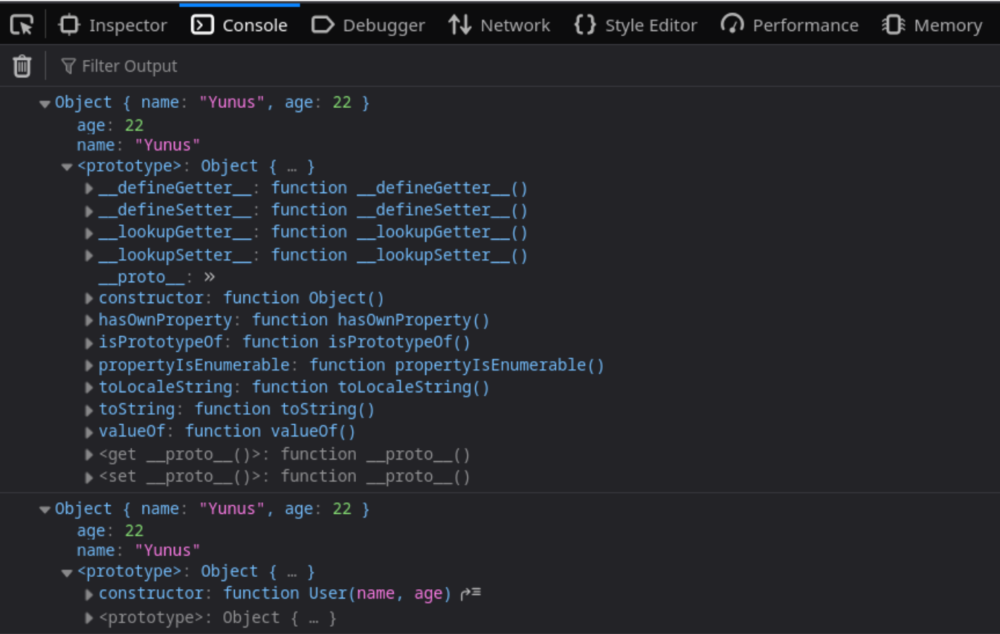
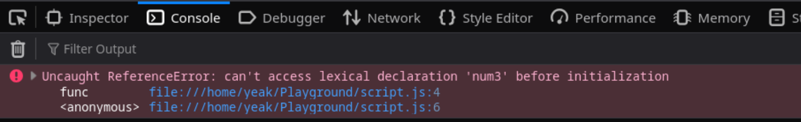
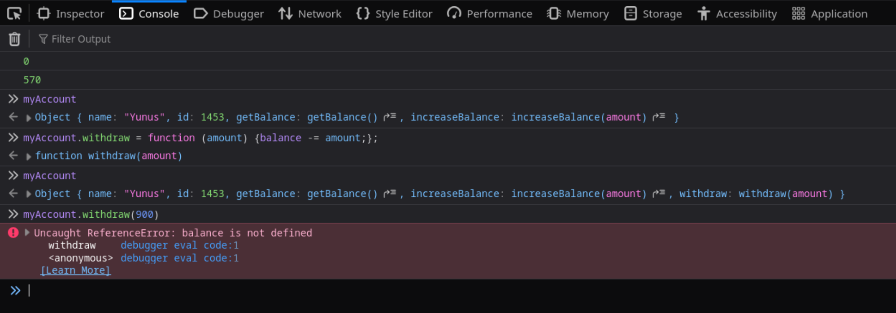

Factory Functions
Definition
First of all let's see what are these factory functions in an example. Please read the following function and try to explain it in your words.
function createUser(name, age) {
let user = {};
user.name = name;
user.age = age;
return user;
}You said pretty easily, right? So, this is a factory function. Definition is simple: A function which returns an object is a factory function. Now, let's see a familiar code snippet.
function User(name, age) {
this.name = name;
this.age = age;
}Here, we implemented object creation with a constructor. Well, if we were to create two objects with same parameters, there would be any difference between these objects? Let's experiment.
let factoryUser = createUser("Yunus", 22);
let constructorUser = new User("Yunus", 22);
console.log(factoryUser);
console.log(constructorUser);
Well, there is not much difference. Just their constructors are different.
However, if we use factory function to create an object, we don't need to use the keyword new.
You might think, "Well, I cannot give up on constructors just for this reason."
Yeah, you're right. Just prepare.
By the way we generally write factory functions in a shorter way:
function createUser(name, age) {
return {
name: name,
age: age,
};
}Or another shorter version:
function createUser(name, age) {
return { name, age };
}However, I prefer long and detailed version when learning because I can see every detail. Also from my experiences, when I understand long versions I intuitively look for whether there exists a shorter way of doing the same thing. Then, I learn it better.
Closures
What does closure means? Before that we need to know what lexical environment means.
Lexical Environment
Simply a function's scope. Or rather variable environment of a function. For example:
function func() {
let num1 = 24;
let num2 = 45;
console.log(`${num1} and ${num2}`);
}
func(); // 24 and 45
let num3 = 91;
console.log(`${num3}`); // 91The output is expected. Here,
- In global lexical environment,
num3is defined. - In
func()'s lexical environment,num1andnum2are defined.
Well, what would happen if we call num3 in function func().
function func() {
let num1 = 24;
let num2 = 45;
console.log(`${num1} and ${num2} and ${num3}`);
}
func();
let num3 = 91;
It couldn't find that lexical declaration. So as a result, every function has a lexical environment. It's first inside of it. Second above of it. When it needs, it looks for that lexical declaration first inside of its scope. If it cannot find it there, it looks above.
So if we would declare num3 before calling that function:
function func() {
let num1 = 24;
let num2 = 45;
console.log(`${num1} and ${num2} and ${num3}`);
}
let num3 = 91;
func(); // 24 and 45 and 91Function first checked its inside scope (or lexical environment), then checked above lexical environment.
First example to closures
Let's imagine we're building a simple banking system that offers savings accounts to customers. Each account should store the customer's name and ID, and every new account starts with a balance of 0. As part of the bank's savings policy, customers are not allowed to withdraw their money until they reach their savings goal. In other words, we want to restrict what can be done with an account. Customers should be able to deposit money and check their balance, but they shouldn't be able to modify the balance directly or perform unauthorized operations. This is a perfect scenario for combining factory functions with closures.
function createSavingAccount(name, id) {
let account = {};
account.name = name;
account.id = id;
// Balance operations
let balance = 0;
let getBalance = function () {
return balance;
}
let increaseBalance = function (amount) {
balance += amount;
}
account.getBalance = getBalance;
account.increaseBalance = increaseBalance;
return account;
}In above factory function we defined balance. However, we didn't give it as a property to the returned object. So if we try to access it:
let myAccount = createSavingAccount("Yunus", 1453);
console.log(myAccount.balance); // undefinedAs you can see, it cannot be accessed anymore. However this doesn't mean it does not exist anymore. We defined functions to use it, so let's use them.
let myAccount = createSavingAccount("Yunus", 1453);
console.log(myAccount.getBalance()); // 0
myAccount.increaseBalance(570);
console.log(myAccount.getBalance()); // 570
Here the variable balance is a private variable.
We cannot access it directly, however we can manipulate it within the given methods.
The functions that allows us to use those private variables and private variables together constitutes closures.
If you were a bad guy and try to bypass our limited access, you could do something similar in the console:

As you see a bad guy tried to manipulate the variable. However, it didn't work because the lexical environment which function defined
does not contain balance.
I think you learned a great functionality of factory functions. Let's expand that with IIFEs (Immediately Invoked Function Expression).
IIFE
As name suggests these functions are called immediately after they declared. Let's see a simple and useless example:
let age = function () {return 22;}();
console.log(age); // 22
Let's explain first line. We first declared a variable called age.
Then immediately defined a simple function that just does return 22;.
And finally putting () at the end of the declaration of function, we invoked it immediately.
It is important to understand what this is now. So we will give more examples:
let name = (() => "Yunus")();
console.log(name); // Yunus
Here we declared a variable called name.
Then immediately defined an arrow function that just does return "Yunus";.
Then we wrapped it up with paranthesis and add () at the end.
So we invoked it immediately after defining it.
At this point you should wonder why are we doing this? It's for historical reasons. Actually you do not need to know this anymore, we don't need it. However if you still want to learn why we used it before you can check this blog.